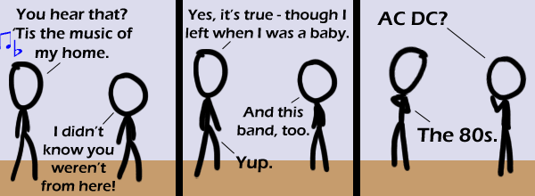

Comic JK 499
When I Feel Like It
⇤
<
?
>
⇥

⇤
<
?
>
⇥
Forum
.
RSS
.
Digg
.
Facebook
.
Reddit
.
Twitter
.
Stumbleupon
>>>>>>>>>>>>anyone who is a regular reader increment count by one ... $i=1; $i++; Enter your thoughts on number 499 here. Please, no spamming, trolling, or 80s nostalgia. it's 10:25am EST on Friday - where is comic 500? What, too much pressure?!??!? > Nobody actually plans explosive diarhea. >But 90s is allowed? What a coincidence. I was born in 1989! >86!!! >>'79... Thank god I have no affiliations to the 70s, however... (apart from them having spawned a few good movies) >>>guys.. first poster totally wins, having been born actually at the very end of the decade referenced in the strip >>>>I know, which is why 86 doesn't make much sense here... 79 at least makes partially sense, since it was the end of a decade either, though viewed at differently... >>>>> '91? >>>>>> no The 80s were cool in the same way that David Hasselhoff is cool. No puns FINALLY OH MY GOD - Negative Twoth > Who are you to say there should be no puns? It's part of these strips, deal with it. But I guess that comes with being "NEGATIVE" all the time, and if that involves a "TOOTH", even worse... >>Well played. >>Ooh, yes. BTW the name comes from a comic a long time back where someone was spamming first, and so I went zeroth, and then it went on like that... - Negative 'No puns' Twoth >>>Negative tooth... that's the outcome of a hockey match, right? >>>I always read it as Tw-ah-th I don't get it... >That's because you weren't there. >>No, it's because the dialogue doesn't follow logically. "And this band, too" makes no sense in context. I grew up in the 80s, and even as a kid I thought the music was all complete shit. It was then, and it still is now. > I guess you don't like music. >>Hey, the 80s gave us some of the best music ever! Boy, even the 90s did, if you search for it long enough... >>>Just none of it was in the charts >>>>Well, who in his/her right mind would search for good music in charts? Not that it can't be found there, but I don't think it's worth the pain... >>>>> It can't be found there. If you think there was ever good music on the charts, you have no taste in music. Generic/boring sells.